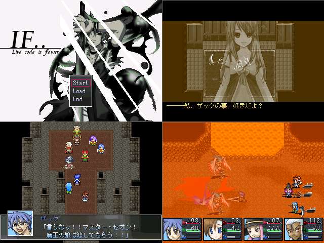

No.34-If-Live code is flower-【体験版】

■If-Live code is flower-【体験版】 B.B
紹介文
勇者軍と魔王軍の戦いの終結から ザックは、戦いの後の世界に希望を見出せないでいた 「遺された者」「遺して行った者」 それぞれが傷跡を残して 何を守ったのかさえ見失ったまま 2年余りの時を過ぎようとしていた。 紅白で提出間に合わなかった作品です＞＜； 今更ですがプレーしていただければ幸いです よろしくお願いします。
管理人から一言: ついにPIAYできるんですね！！うひょー
© VIPRPG